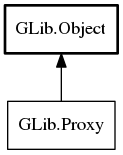

Proxy
Object Hierarchy:
Description:
A Proxy handles connecting to a remote host via a given type of proxy server.
It is implemented by the 'gio-proxy' extension point. The extensions are named after their proxy protocol name. As an example, a SOCKS5 proxy implementation can be retrieved with the name 'socks5' using the function get_extension_by_name.
Namespace: GLib
Package: gio-2.0
Content:
Static methods:
Methods:
Inherited Members:
All known members inherited from class GLib.Object